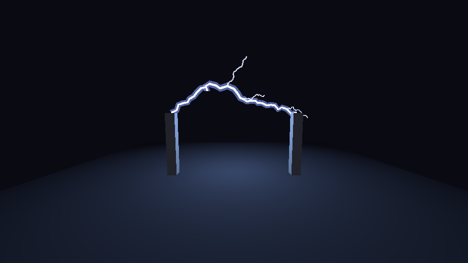
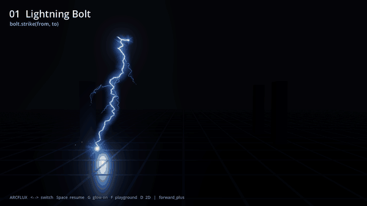
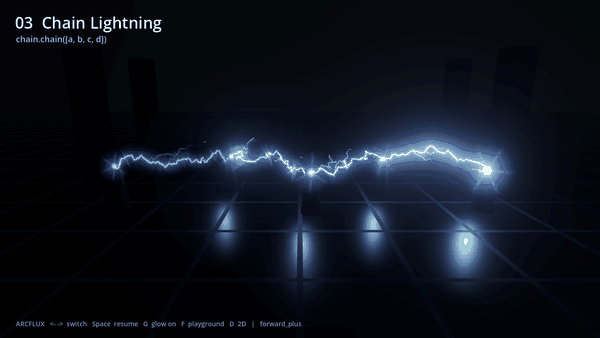

How to make a lightning effect in Godot 4
Short version: a bolt is a jagged line from A to B. You get the jaggedness by splitting the line in the middle, pushing the midpoint sideways by a random amount, and doing that again on every piece five times. Draw it as a thin ribbon that faces the camera with additive blending, draw a wider, dimmer copy behind it for the glow, hang two or three short branches off it, add a light with a random energy, and rebuild the whole thing every 40 to 90 ms. That rebuild rate is the flicker. Below is that in about 80 lines of GDScript with no textures, what to change for a sky strike or a chain, and where it runs out.
The 80-line bolt
Add a MeshInstance3D, attach this script, set target in the inspector (it's relative to the node), run. The ribbon is an ImmediateMesh rebuilt from scratch each time.

extends MeshInstance3D
## A lightning bolt from this node to `target`, rebuilt a few times a second.
## Camera-facing strips drawn with ImmediateMesh, no textures.
@export var target := Vector3(0.0, 0.0, -4.0)
@export var width := 0.06
@export var jitter := 0.22
@export var branches := 3
var _imm := ImmediateMesh.new()
var _timer := 0.0
var _light: OmniLight3D
func _ready() -> void:
mesh = _imm
var m := StandardMaterial3D.new()
m.shading_mode = BaseMaterial3D.SHADING_MODE_UNSHADED
m.transparency = BaseMaterial3D.TRANSPARENCY_ALPHA
m.blend_mode = BaseMaterial3D.BLEND_MODE_ADD
m.cull_mode = BaseMaterial3D.CULL_DISABLED
m.vertex_color_use_as_albedo = true
material_override = m
_light = OmniLight3D.new()
_light.light_color = Color(0.6, 0.75, 1.0)
_light.omni_range = 8.0
add_child(_light)
func _process(delta: float) -> void:
_timer -= delta
if _timer > 0.0:
return
_timer = randf_range(0.04, 0.09)
_rebuild()
func _rebuild() -> void:
var cam := get_viewport().get_camera_3d()
var eye := to_local(cam.global_position) if cam else Vector3(0, 0, 10)
_imm.clear_surfaces()
var pts := _path(Vector3.ZERO, target, jitter)
_strip(pts, width * 3.0, Color(0.25, 0.35, 1.0, 0.35), eye) # soft glow
_strip(pts, width, Color(0.85, 0.92, 1.0), eye) # bright core
for i in branches:
var k := randi_range(2, pts.size() - 3)
var dir := (pts[k] - pts[k - 1]).normalized()
var away := Vector3(randf_range(-1, 1), randf_range(-1, 1), randf_range(-1, 1))
var end := pts[k] + (dir + away * 0.9).normalized() * randf_range(0.4, 1.2)
_strip(_path(pts[k], end, jitter), width * 0.5, Color(0.7, 0.8, 1.0, 0.8), eye)
_light.position = target * 0.5
_light.light_energy = randf_range(1.0, 4.0)
## Midpoint displacement: split each segment and push the middle sideways.
func _path(a: Vector3, b: Vector3, amp: float) -> PackedVector3Array:
var pts := PackedVector3Array([a, b])
for _step in 5:
var out := PackedVector3Array()
for i in pts.size() - 1:
var p := pts[i]
var q := pts[i + 1]
var off := Vector3(randf_range(-1, 1), randf_range(-1, 1), randf_range(-1, 1))
off -= off.project(q - p)
out.append(p)
out.append((p + q) * 0.5 + off * amp * (q - p).length())
out.append(pts[pts.size() - 1])
pts = out
return pts
## A ribbon of width w along pts, turned to face the eye.
func _strip(pts: PackedVector3Array, w: float, col: Color, eye: Vector3) -> void:
_imm.surface_begin(Mesh.PRIMITIVE_TRIANGLE_STRIP)
for i in pts.size():
var p := pts[i]
var dir := (pts[mini(i + 1, pts.size() - 1)] - pts[maxi(i - 1, 0)]).normalized()
var side := dir.cross((eye - p).normalized()).normalized() * w * 0.5
_imm.surface_set_color(col)
_imm.surface_add_vertex(p - side)
_imm.surface_set_color(col)
_imm.surface_add_vertex(p + side)
_imm.surface_end()
Why it reads as lightning
| Part | What it does |
|---|---|
| Midpoint displacement | Five rounds of splitting turn 2 points into 33. The offset is a fraction of the segment's own length, so the first split moves the middle a lot and the last splits only add fine noise. That mix of big bends and small kinks is the lightning look. Random points along a straight line give a sawtooth instead. |
| Offsets at right angles | off -= off.project(q - p) removes the part of the push that runs along the segment. Without it the points bunch up and the bolt folds back on itself. |
| Two strips | The core is thin and nearly white. The glow is three times wider, blue and 35% opaque. With additive blending they add up to a hot white centre with a blue halo, and it works on Compatibility, where the engine's own glow is weaker. |
| Ribbon facing the eye | For each point, the cross product of the line direction and the direction to the camera gives a sideways vector that's always in the screen plane. The ribbon never shows its edge. |
| Branches | Each branch starts at a random point on the main bolt, heads roughly the way the bolt is going plus a random tilt, and is shorter, thinner and dimmer. Two or three is plenty. Ten looks like a bush. |
| Rebuild every 40 to 90 ms | Lightning doesn't move, it gets replaced. A new random shape several times a second reads as flicker. The light's energy is rolled at the same time so the scene flickers with it. |
Variations
A sky strike is the same node placed 20 m up with target on the ground, shown for a fifth of a second and then hidden. Raise the displacement rounds from 5 to 7 for a bolt that long, or the segments between points get visibly straight. Chain lightning is one bolt per pair of enemies, started from the previous enemy's position. A continuous arc, say between two Tesla poles, is the script as it stands with jitter dropped to about 0.1 and the light range reduced. For a bolt that fades instead of vanishing, keep the last three shapes around with an age each and draw the older ones with lower alpha.
Where it runs out
The ribbon is rebuilt on the CPU in GDScript. One bolt costs nothing, fifty bolts a frame is where you start noticing it, and an electric aura crawling over a character's mesh needs hundreds of tiny arcs that follow the surface, which this script has no way to do.
A strike is more than the bolt. The things that sell it are a flash on the ground where it lands, a scorch mark that stays, sparks that scatter and bounce, an after-image that fades over a third of a second, and a light pulse that's much brighter than the ambient flicker. Each is its own small effect with its own timing.
On Compatibility, each mesh can be lit by up to 8 lights by default, so a scene with many bolts needs their lights rationed or pooled. The strips themselves draw identically on all three renderers.
Or drop in a preset
The pack I sell for this, Lightning & Beam VFX for Godot 4 (ARCFLUX), has 33 presets: 27 in 3D and 6 in 2D. Bolts, a sky strike with ground flash and scorch mark, chain lightning, a continuous arc between two moving nodes, an electric aura on any mesh, a Tesla coil and a plasma ball, an energy beam with a charge-up, a railgun trail, heal and tractor beams, an EMP shockwave and an electric impact burst, in six palettes. The ribbons are ArrayMesh strips expanded to face the camera in the vertex shader rather than on the CPU, so a scene full of arcs stays cheap. It uses no compute shaders, no particle trails and no screen or depth textures, which is why it behaves the same on Forward+, Mobile and Compatibility. Tested on Godot 4.4.1 and 4.7.2.

var bolt := ArcfluxBolt3D.new()
add_child(bolt)
bolt.strike($Hand.global_position, $Enemy.global_position)
$Laser.set_active(Input.is_action_pressed("fire")) # continuous effects

chain([a, b, c]).There's a free version with the two core effects and two presets, using the same addon folder and class names, so an upgrade is a copy over the top. The full pack's itch page has a browser demo of every preset.